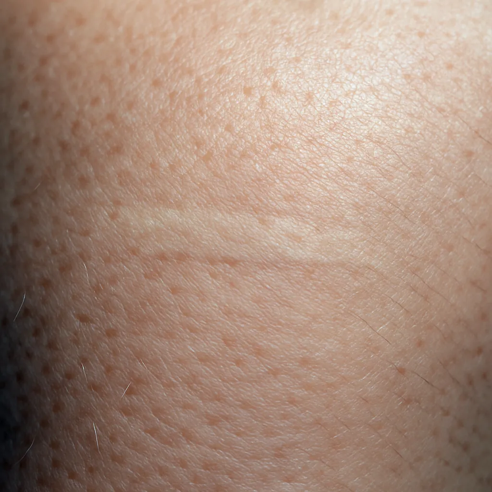
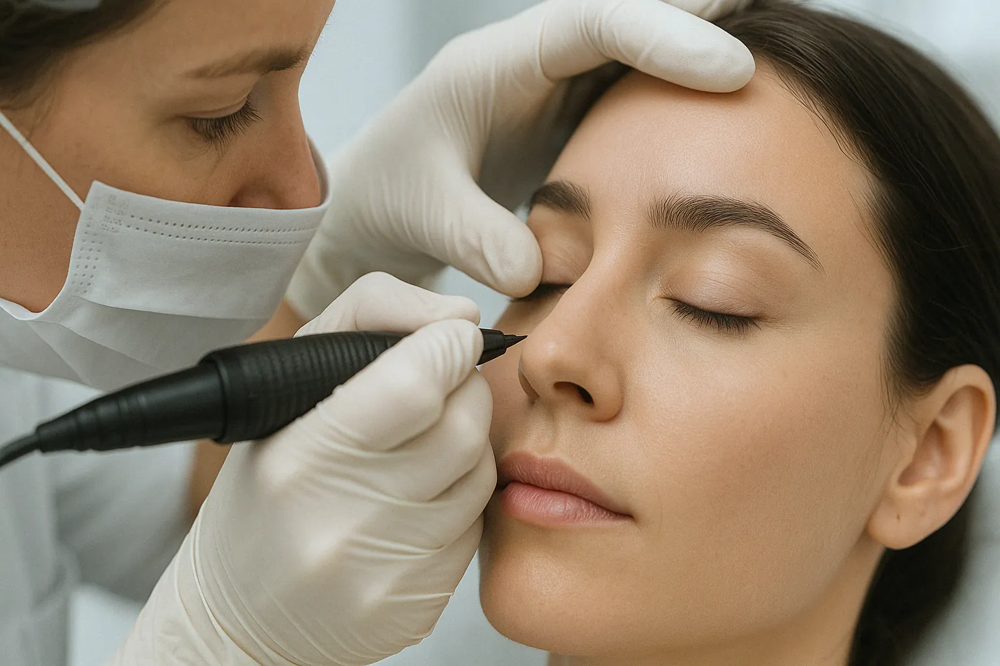

Restore Confidence, Beautifully.
- Natural-looking 3D Areola Repigmentation
- Effective Scar Camouflage (surgical, injury)
- Correction of previous PMU
- Compassionate, expert care
- Areola procedures FREE for Breast Cancer Survivors
Compassionate Paramedical Solutions
Schedule your private consultation.
Loading form...
Paramedical Services at Studio Bella
Cookie Bandel provides skilled and compassionate paramedical tattooing services to help clients feel whole and confident.
- Areola Repigmentation: Creating realistic 3D areolas post-mastectomy or for cosmetic enhancement. We use multiple colors for natural dimension. This service is offered FREE of charge to breast cancer survivors. (Standard Price: $400)
- Scar Camouflage: Custom blending pigment to match your skin tone, effectively minimizing the appearance of surgical scars, injury scars, or skin imperfections where hair won't grow. Also helps diminish keloids. ($150/hour, 1 Hour minimum)
- Corrections: Expert correction of unsatisfactory permanent makeup done elsewhere (color, shape). Cookie is often sought out for her repair expertise. ($150/hour, 1 Hour minimum)
A consultation is required to assess the area and discuss the best approach for your specific needs. Your privacy and comfort are our top priorities.
Paramedical Results (Examples)
(Note: Use sensitive and appropriate imagery. Focus on scar camouflage examples if available, or general skin tone matching.)


Client Experiences
"After my surgery, Cookie's areola tattooing helped me feel like myself again. Her work is incredible, and her kindness meant the world."
"I had a noticeable scar on my face that always bothered me. Cookie camouflaged it perfectly. I can barely see it now!"
Ready to Discuss Your Paramedical Needs?
Schedule a private, complimentary consultation with Cookie Bandel to explore how paramedical tattooing can help you.